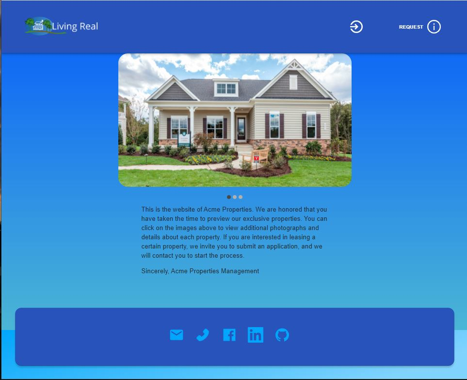
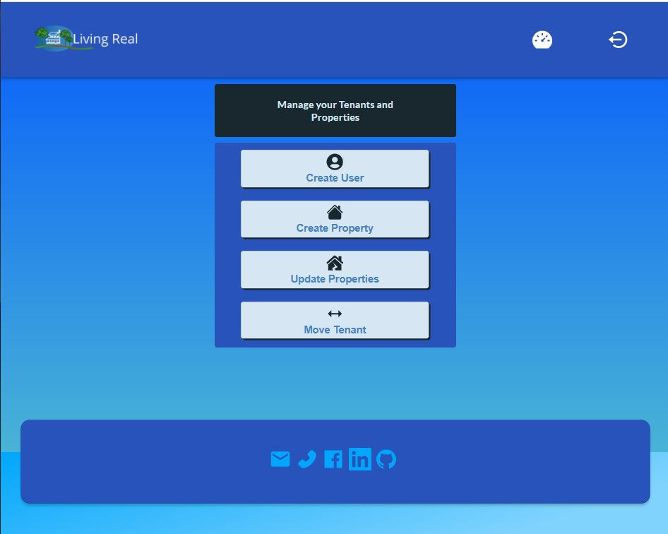
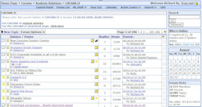
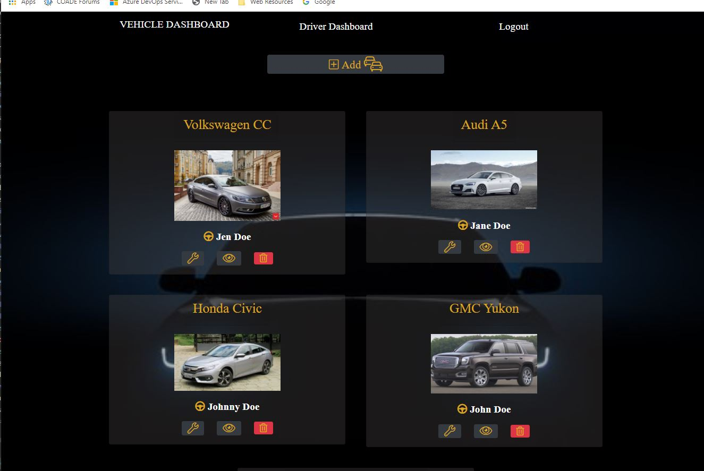
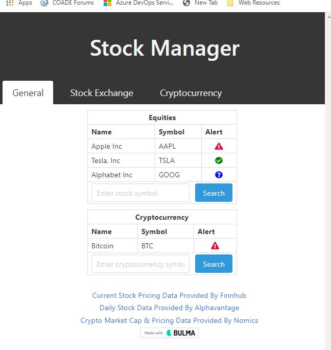

Projects & Accomplishments
CAESAR II Project
The CAESAR II program is the leading pipe stress analysis software program, the industry standard. The computations performed include static (weight, temperature, pressure, wind, wave, and seismic) loads, as well as dynamic effects performed by modal, harmonic, spectrum, and time history analysis. Stresses are computed in accordance with 35+ national and international standards.This has been my main project for the last 35 years.
Living Real Project

A (small owner) Real Estate management application project. This PWA is built with React and Redux. The application implements GraphQL to maintain state, Stripe for payments, as well as MongoDB and indexedDB to maintain data.
CAESAR II News Reel Project

The CAESAR II newsreel keeps users informed about the latest changes to the software and related information. I update this as needed with new content.
CAESAR II Discussion Forum Project
The CAESAR II Discussion Forum allows users to discuss issues and problems related to the application of the software with each other as well as the Engineering staff behind the software. I have been a major contributor to this Forum since 1999.
Auto-Tracker Project

A project involving the MVC architecture, ORM via sequelize to simplify SQL database operations, handlebars to assist with code modularization and page generation, bootstrap for layout and responsiveness, and AWS S3 for image operations.
Important vehicle details (registration renewal date, tire mileage, etc) can be specified and tracked so that critical maintenance items don't lapse.
TANK Project
The TANK program performs the analysis or rerating of large cylindrical bottom-founded tanks (typically used for oil storage). The computations are performed according to API-650 and/or API-653. I was the sole developer on this program from 1992-2011.
Computations performed include: shell thickness determination, maximum fluid height permitted, supported cone roof design, internal pressure capacity, seismic evaluation, and settlement evaluation. Computations considered ambient and high temperatures as well as carbon and stainless steels.
Investment Monitor Project
A project involving HTML, CSS, and JavaScript, implementing both web APIs and 3rd party API endpoints. This application monitors defined investments (stocks, crypto-currencies) and compares current data to user defined preferred ranges.
Daily Weather Project
This application obtains the current weather for a specified city and the forecast for the next five days. Up to ten searched cities are saved in a selection list for a rapid reacquisition of their weather and forecast. This selection list is maintained in the local browser storage. Openweathermap is the API-endpoint used to acquire the weather data.
Run Buddy Project

An HTML coding project with advanced CSS styles. A great tutorial project to understand the relationship between HTML and CSS. Features include transparency, animations, and media queries.